Nuestras opciones
Retiro en local
Puedes pedir a traves de nuestra pagina y poder retirar tu pedido en nuestro local en .....
Despacho a domicilio
Si te encuentras en un redio de 3KM tu pedido es entregado de manera gratuita en tu domicilio
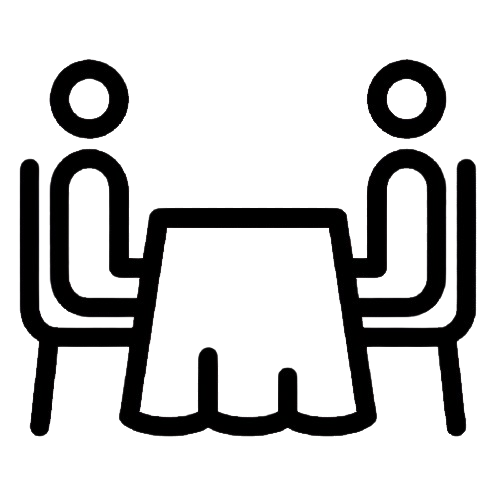
Ven a nuestro local
Contamos con capacidad para 12 personas, asi que ¡corre ven pronto a disfurtar de nuestro local!
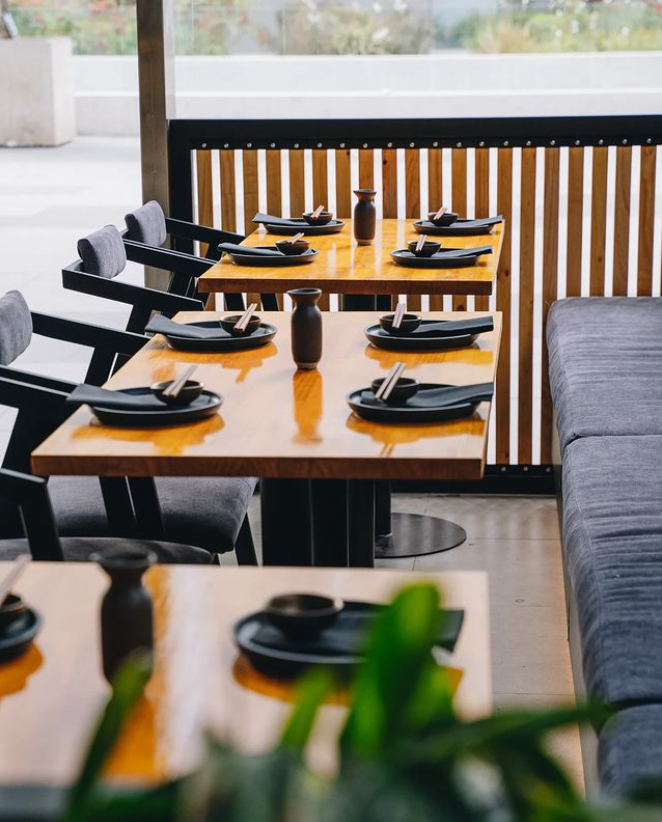
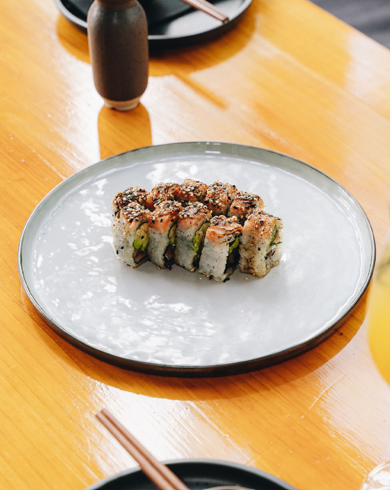
 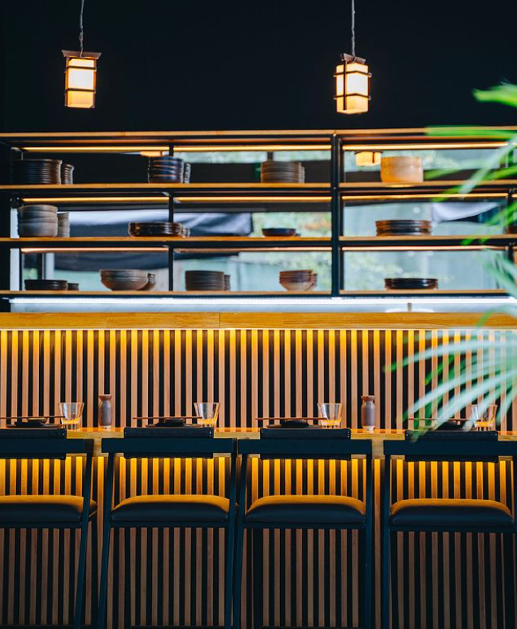
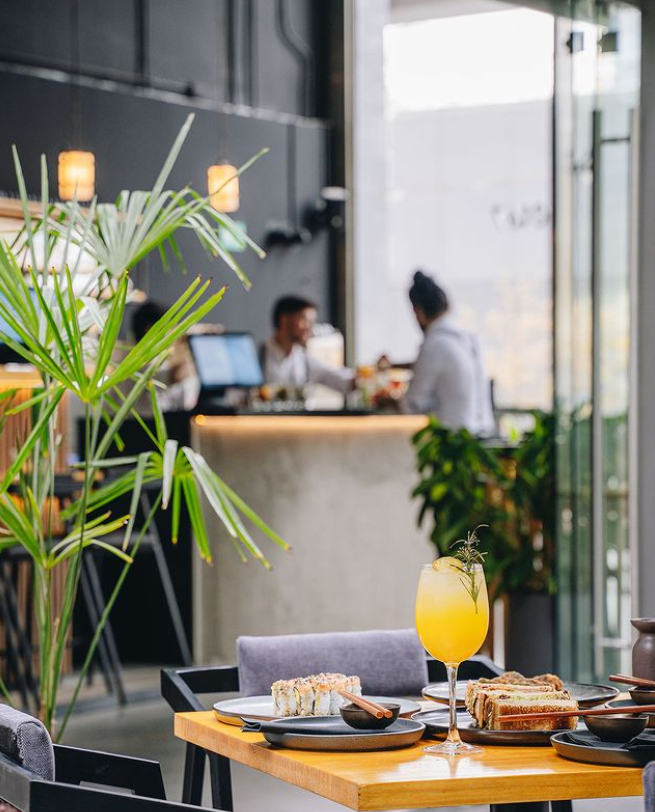
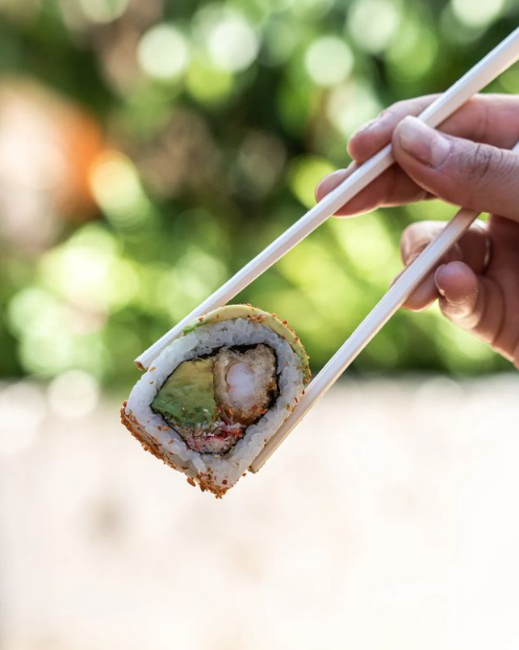
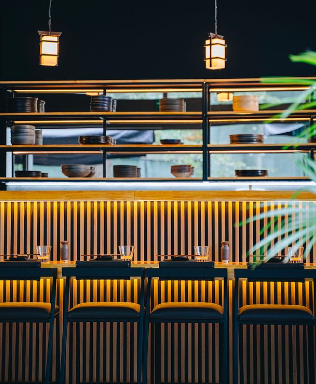
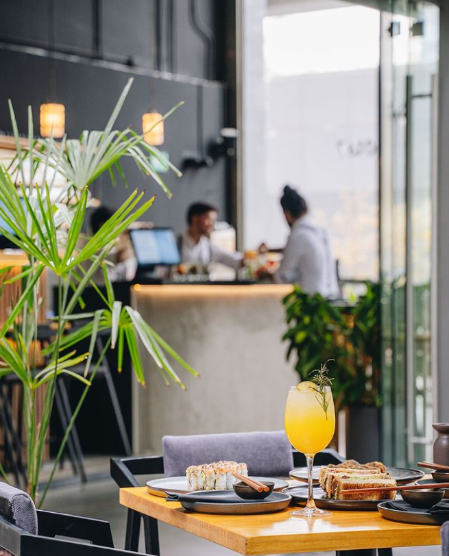
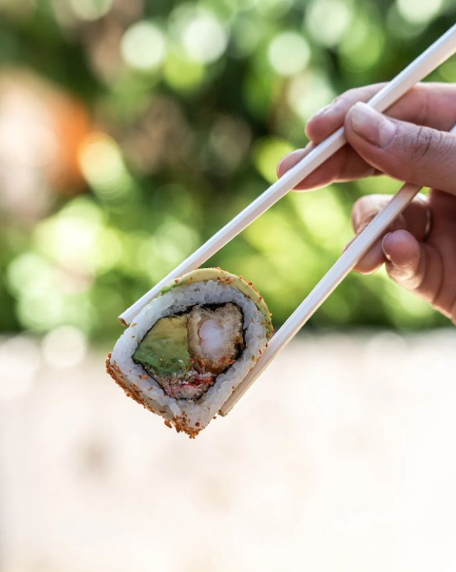
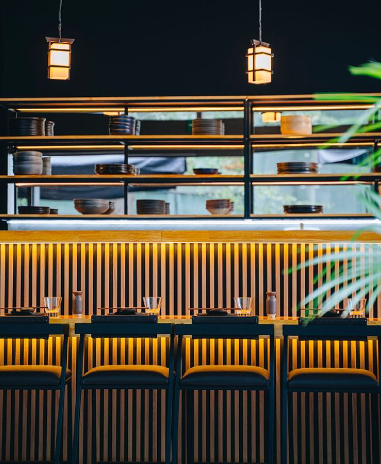
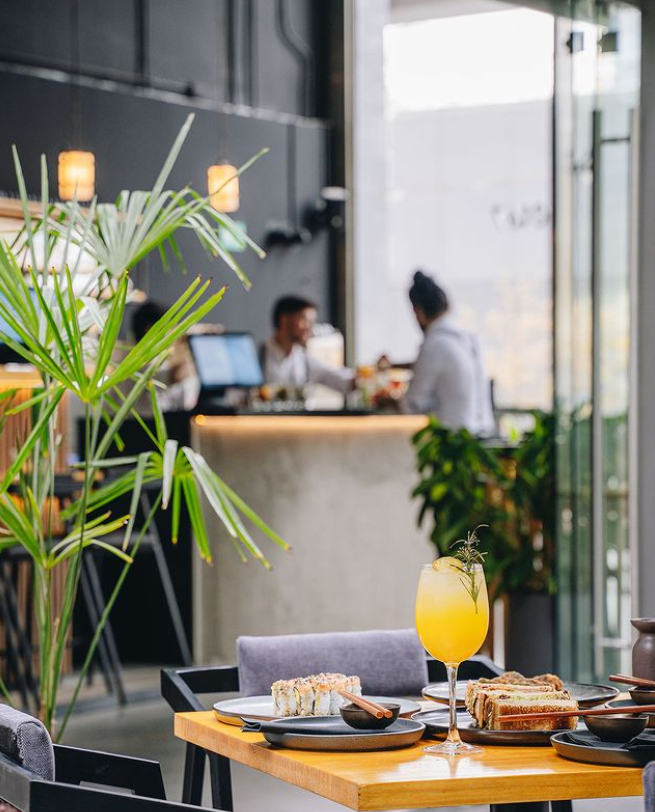
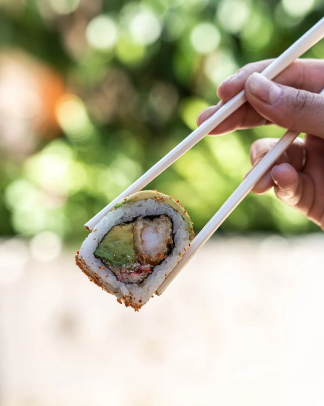